All probability distributions have four basic functions:
Where [dist] is some common distribution
rnorm(10, 5, 10) # random normals, mu and sigma set
## [1] 19.118058 5.383839 14.182221 1.518716 4.752812 -23.827832
## [7] 19.266783 -2.998289 8.462080 18.820998
rlnorm(10) # random lognormal
## [1] 0.3470505 1.2388964 0.2325203 1.4033723 0.7648476 1.8476694 1.4290259
## [8] 3.1675332 2.3232467 0.2148674
rexp(10)
## [1] 1.07953105 1.42382312 1.89056044 0.95924342 0.42612724 1.92282949
## [7] 0.57520568 0.65132118 2.49563381 0.07723471
rgamma(10, shape=2)
## [1] 0.9839812 5.4920170 2.6591505 0.2864652 4.1498116 2.7233513 2.7334809
## [8] 1.6861083 1.2015975 1.3654381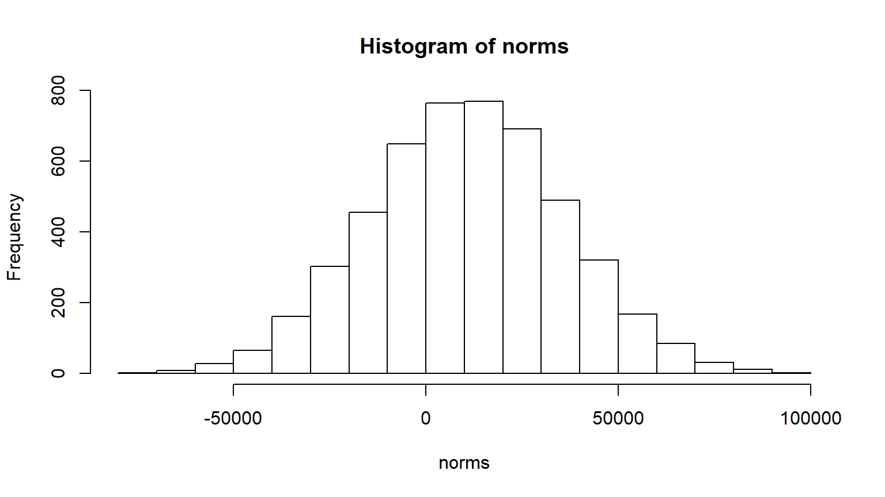
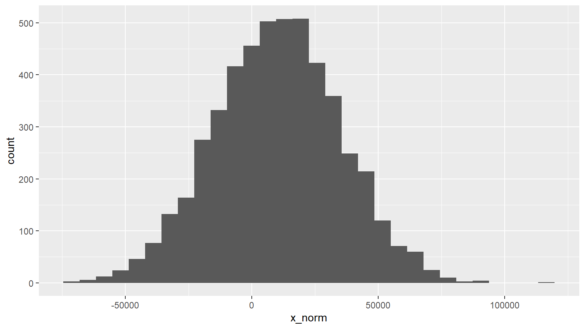
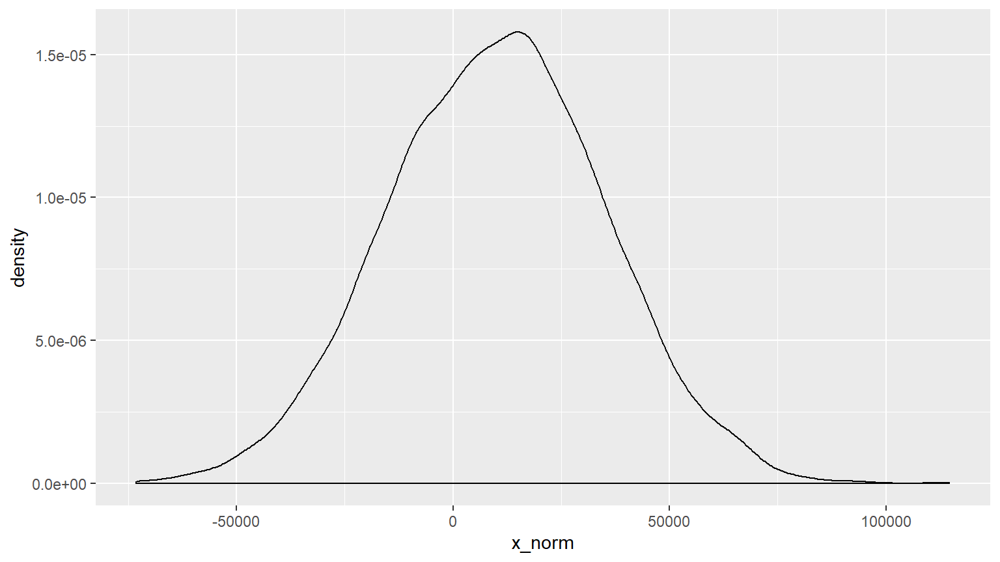
# overlay of density plots
tbl_sims %>%
ggplot() +
geom_density(aes(x_exp), alpha = 0.8, fill = 'red') +
geom_density(aes(x_norm), alpha = 0.8, fill = 'blue')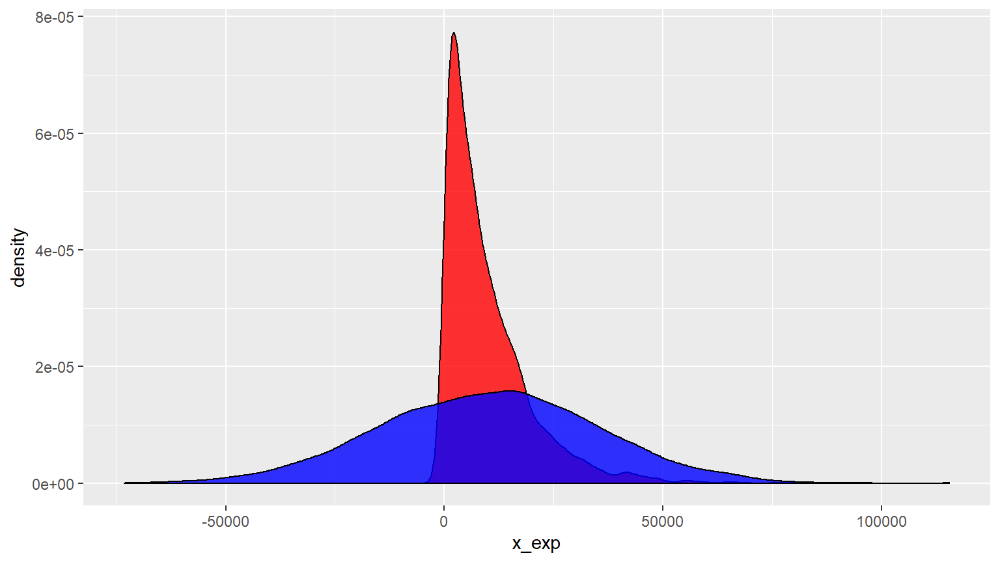
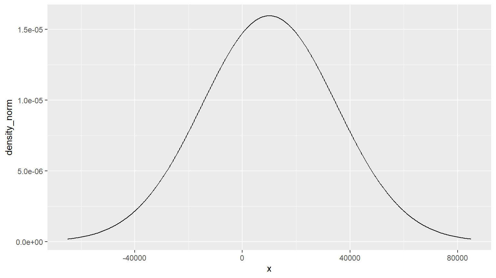
tbl_plot$cdf_norm <- pnorm(tbl_plot$x, dist_mean, dist_sd)
tbl_plot %>%
ggplot(aes(x, cdf_norm)) +
geom_line()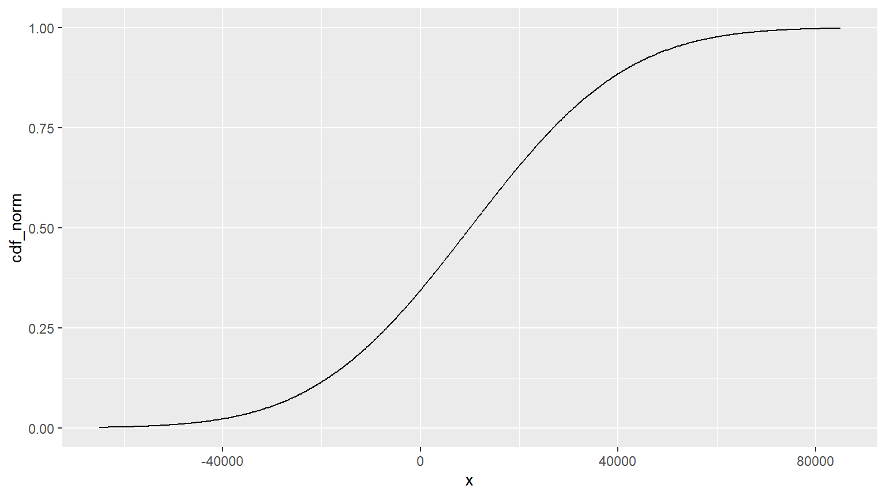
You’re pricing treaty XOL and want to cede the top 1% per claim. Where is your attachment?
Generate density and cdf plots for an exponential distribution
# randomly generate from an exponential
dist_mean <- 10e3
dist_sd <- dist_mean
sims <- 5e3
exps <- rexp(sims, dist_mean)
# create density plot
plot_points <- 500
x_lims <- dist_mean + c(-1, 1) * 3 * dist_sd
tbl_plot <- data.frame(
x = seq(x_lims[1], x_lims[2], length.out = plot_points)
)
tbl_plot$density_norm <- dnorm(tbl_plot$x, dist_mean, dist_sd)
tbl_plot %>%
ggplot(aes(x, density_norm)) +
geom_line()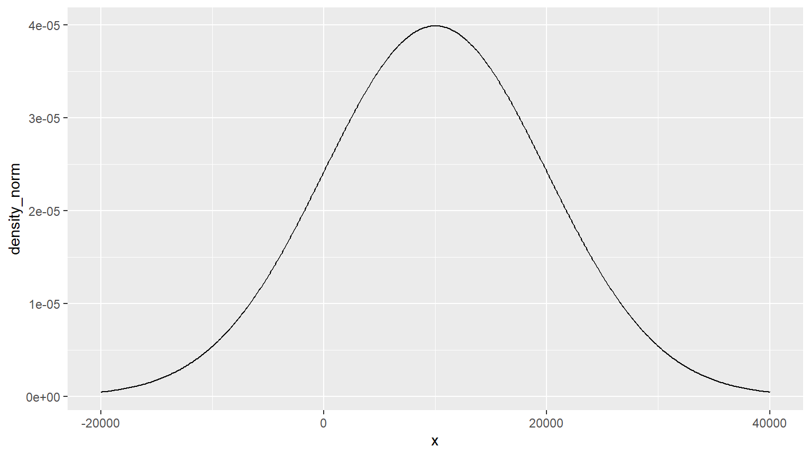
# create cdf plot
tbl_plot$cdf_exp <- pexp(tbl_plot$x, dist_mean, dist_sd)
tbl_plot %>%
ggplot(aes(x, cdf_exp)) +
geom_line()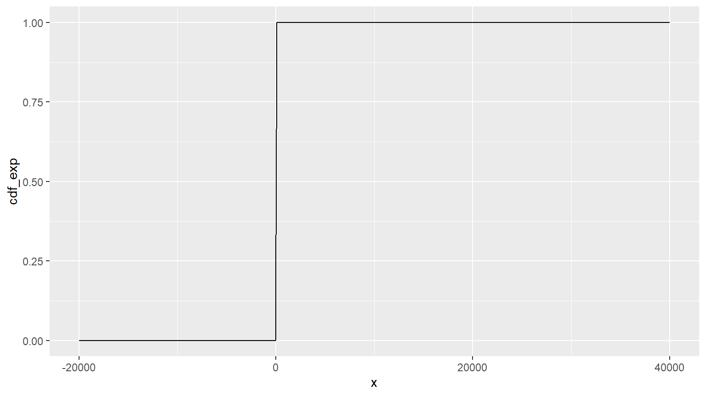
Claims are Poisson distributed, claim severity normal
set.seed(1234)
policy_years <- 2001:2010
freq <- 1e3
num_claims <- rpois(length(policy_years), freq)
dist_means <- dist_mean * 1.05 ^ (policy_years - min(policy_years))
severity <- mapply(rnorm, num_claims, dist_means, MoreArgs = list(sd = dist_sd))
tbl_claim <- data.frame(
policy_year = rep(policy_years, num_claims)
, severity = unlist(severity))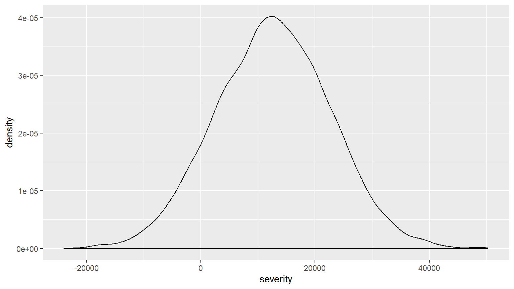
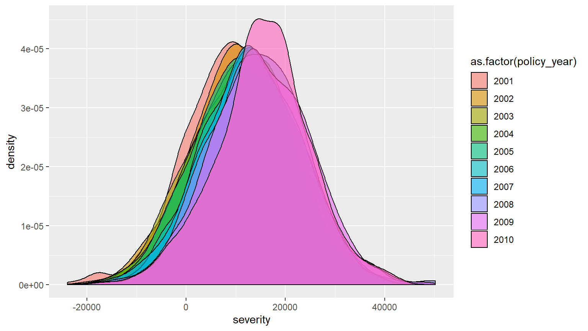
tbl_claim %>%
ggplot(aes(severity, fill = as.factor(policy_year))) +
geom_density() +
facet_wrap(~ policy_year)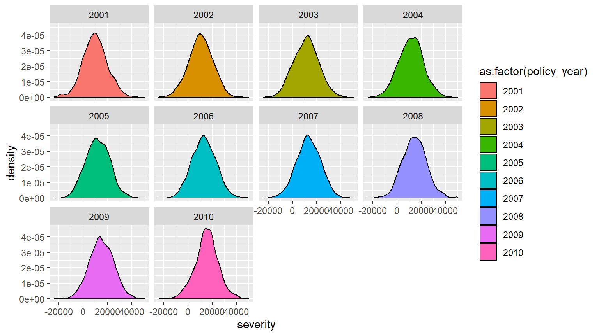
Generate a random sample of any discrete set of values.
set.seed(1234)
sample(1:100, 10)
## [1] 28 80 22 9 5 38 16 4 86 90
sample(1:100, 100, replace=F) # select all, randomize order
## [1] 70 79 78 14 56 62 4 94 21 40 84 96 67 5 66 47 91
## [18] 48 3 41 72 32 42 43 2 54 49 89 51 6 74 100 57 8
## [35] 26 17 63 59 88 98 99 85 22 35 81 16 82 58 10 53 45
## [52] 25 75 19 86 23 71 20 73 7 60 44 37 27 12 95 1 28
## [69] 64 9 30 77 65 39 80 38 92 24 13 33 76 69 29 55 11
## [86] 36 93 83 52 97 87 90 31 34 46 68 61 18 15 50Use the prob argument to weight the probabilities.
# lognormal distribution
severity <- 10000 ; CV <- .3
# parameters of underlying normal
sigma <- sqrt(log(1 + CV^2))
mu <- log(severity) - sigma^2/2
plot(function(x) dlnorm(x), mu, sigma, ylab="LN f(x)") 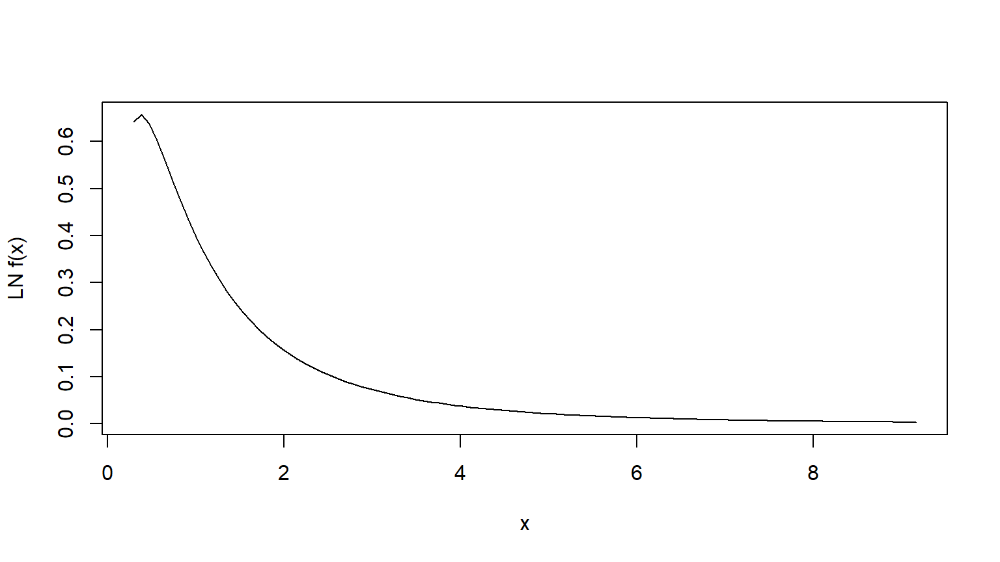
# generate random samples
# via random
set.seed(1234)
claims <- rlnorm(100, mu, sigma)
claims2 <- rlnorm(1000, mu, sigma)
# draw histograms
hist(claims, breaks=seq(1, 500000, length.out=40))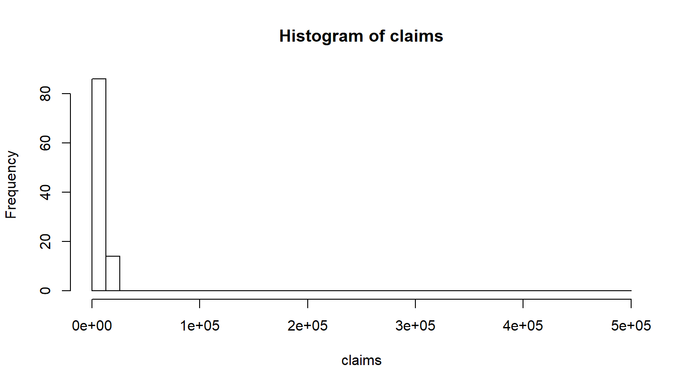
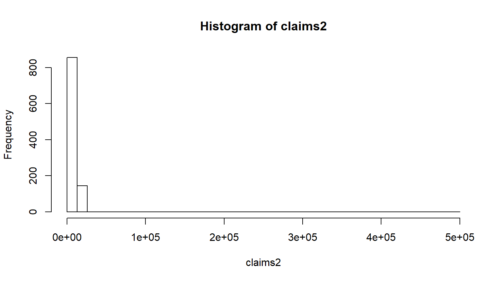
# get stats - the cheating way
library(psych)
describe(claims)
## vars n mean sd median trimmed mad min max
## X1 1 100 9573.4 3118.04 8555.71 9126.4 2238.82 4810.94 20242.39
## range skew kurtosis se
## X1 15431.45 1.31 1.48 311.8
describe(claims2)
## vars n mean sd median trimmed mad min max
## X1 1 1000 9931.42 2935.31 9521.85 9682.01 2606.43 3534.41 24475.83
## range skew kurtosis se
## X1 20941.42 0.92 1.48 92.82
# the manual way
basicStats <- function(dist_sample) {
print(paste0("Mean", mean(dist_sample)))
print(paste0("StDev", sd(dist_sample)))
print(paste0("CV", cv(dist_sample)))
}
basicStats(claims)
## [1] "Mean9573.39613881869"
## [1] "StDev3118.03554131177"
## Error in cv(dist_sample): could not find function "cv"
basicStats(claims2)
## [1] "Mean9931.420474281"
## [1] "StDev2935.31314452152"
## Error in cv(dist_sample): could not find function "cv"